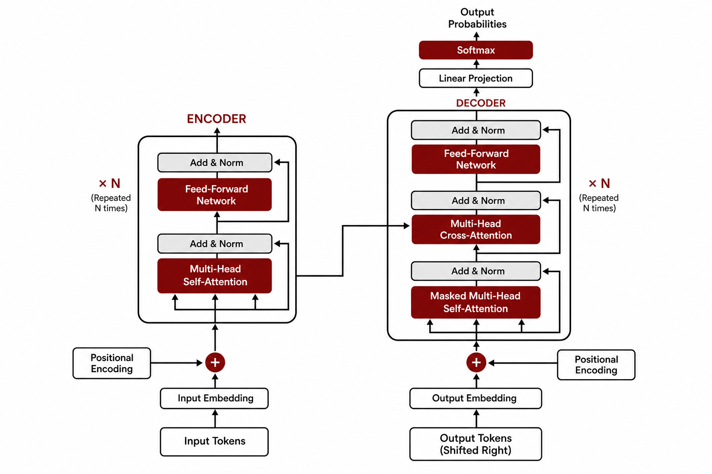

Chapter 7: Transformers I — Attention and Contextual Embeddings
Lecture video: https://www.youtube.com/watch?v=IeF7aATDaw4 Slides: mit15_773_s24_lec07.pdf Companion Colab notebook: https://colab.research.google.com/drive/1G3wNTJukKRtPBrfXQY84TuPfwkRwtv9h
Learning Objectives
After completing this chapter, you should be able to:
- Explain why bag-of-words models and static word embeddings (such as GloVe) are inadequate for tasks where the meaning of a word depends on its context and on word order.
- Describe the slot filling (sequence labeling) problem and formulate it as a word-level multi-class classification task.
- State the three architectural requirements that motivated the transformer: same-length output, context sensitivity, and order sensitivity.
- Derive the self-attention operation as a weighted average of embeddings, where the weights come from softmax-normalized dot products.
- Explain why multiple attention heads are useful, and how their outputs are concatenated and projected back to the original embedding dimension.
- Describe how positional embeddings inject word-order information into an otherwise order-blind architecture.
- Assemble a complete transformer encoder in Keras and apply it to the ATIS slot-filling problem end to end.
7.1 Why Transformers?
Transformers were invented in 2017 for machine translation — turning English into German, German into French, and so on. But within a few years they escaped their original niche entirely. As Ramakrishnan explains in lecture, the situation today is that if you are working on almost any serious machine learning problem, "you almost reflexively will try a transformer first, because it's probably going to be pretty darn good." The list of domains they have transformed is remarkable:
- Information retrieval and search
- Machine translation and speech recognition
- Text-to-speech
- Computer vision (the very territory we conquered earlier with convolutional networks)
- Reinforcement learning
- Generative AI — large language models, text-to-image models, image captioning
- Special-purpose scientific systems such as AlphaFold, the protein-structure model
💬 From the lecture: "Everything — everything — runs on a transformer. ... It's an incredibly flexible architecture, and I think we are lucky to be alive during a time when such a thing was invented."
This chapter and the next develop the transformer from first principles. Rather than dropping the famous architecture diagram on you all at once, we will follow the course's approach: start with a concrete business problem, identify what any architecture must do to solve it, and then invent each transformer ingredient as the need arises.
The motivating use case: natural language search
Our running use case is search, or more broadly, information retrieval. Users increasingly type (or speak) requests in plain natural language:
- "Find me all flights from BOS to LGA tomorrow morning"
- "How many customers abandoned their shopping carts?"
- "Find all contracts that are up for renewal next month"
A common architecture for such systems converts the natural language query into a structured query — SQL, say — which can then be run against a database. The upside is enormous: search friction goes down and productivity goes up. The downside is that the bar for accuracy is high. This is not "write me a limerick about deep learning," where many answers are acceptable. If a user asks for flights from Boston to LaGuardia tomorrow morning, you had better get it exactly right.
To convert "Find me all flights from BOS to LGA tomorrow morning" into SQL, the system must first automatically extract the travel-related entities from the query: the origin (BOS), the destination (LGA), the date and time window (tomorrow morning). That entity-extraction step is the deep learning problem we will solve in this chapter.
7.2 The Slot-Filling Problem
We will use the Airline Travel Information Systems (ATIS) dataset, a classic benchmark of several thousand real flight-related queries. Helpfully, the researchers who compiled ATIS manually labeled every word of every query with the kind of travel entity it represents — or with O ("other") if it is not an entity at all. These per-word labels are called slots.
Consider the query:
Input: i want to fly from boston at 7 am and arrive in denver at 11 in the morning
Labels: O O O O O B-fromloc.city_name O B-depart_time.time I-depart_time.time
O O O B-toloc.city_name O B-arrive_time.time O O B-arrive_time.period_of_day
A few things to notice:
- Ordinary words ("i", "want", "to", "fly", "from") get the catch-all label
O. - "boston" is labeled
B-fromloc.city_name— it is a departure city in this sentence. In another query where a traveler is flying into Boston, the same word would receive a different tag. The labels are inherently contextual. - Some entities span multiple tokens. "7 am" is a departure time made up of two words, so the first word is tagged
B-depart_time.time(B for Beginning) and the secondI-depart_time.time(I for Intermediate, i.e., inside the entity). This B/I convention lets the model mark where a multi-word entity starts and continues.
The ATIS annotators anticipated essentially every travel concept — airline codes, airport names, round trip vs. one way, relative dates ("tomorrow"), and so on — resulting in 123 possible slot types.
Formulating the task
The task, then, is a word-to-slot multi-class classification problem: each of the 18 words in the example above must be assigned to one of 123 slot types. Crucially, we are not classifying the whole query into one of 123 categories — every word gets its own classification.
If we could run the query through a deep neural network and generate 18 outputs — one per input word — we could attach a 123-way softmax to each of those 18 outputs and train the whole thing with cross-entropy loss.
💬 From the lecture: "Isn't it cool that we can just casually talk about sticking a 123-way softmax onto each one of 18 nodes? Folks, wake up — you're not easily impressed. I'm impressed by that."
This formulation reveals exactly what we need from our architecture. Three requirements emerge:
- Same-length output. The output must have the same length as the input, so that each output element can be classified into the right slot type. And inputs vary in length — some queries are short, some long — so the architecture must accommodate variable-length sequences while preserving their cardinality.
- Context. When the model sees "boston," it cannot decide between departure city and arrival city without looking at the surrounding words — is there a "from"? A "to"?
- Order. "Flights from Boston to LaGuardia" means something very different from "flights from LaGuardia to Boston."
Why static embeddings are not enough
Requirement 2 deserves emphasis, because it is precisely where the tools from the previous two chapters fall short. Bag-of-words representations discard both order and context by construction. And static embeddings such as GloVe assign one vector per word, for all contexts that word can ever appear in. If a word has several meanings, its GloVe vector is, in Ramakrishnan's words, "some mushy average of all those meanings." Consider:
| Word | Example contexts |
|---|---|
| see | "I will see you soon" / "I will see this project to its end" / "I see what you mean" |
| bank | "I went to the bank to apply for a loan" / "I am banking on the job offer" / "I am standing on the left bank" |
| it | "The animal didn't cross the street because it was too tired" / "... because it was too wide" |
| station | "The train left the station on time" / "The radio station was playing 60s hits" / "I was stationed on a remote island" |
The pronoun example is a famous one: in "the animal didn't cross the street because it was too tired," it refers to the animal; change "tired" to "wide" and it refers to the street. A single fixed vector for "it" cannot capture this.
The transformer architecture meets all three requirements. It takes the surrounding context of each word into account, takes word order into account, and generates an output with the same length as the input. Indeed, the name itself comes from requirement 1: if ten things come in, ten things go out — but each of the ten that goes out is a transformed, context-aware version of the one that came in.
The practical impact has been dramatic. When Google introduced the BERT model (a transformer, which we meet in Chapter 8) into its search engine in 2019, the quality jump was far larger than the marginal gains typical of such a heavily optimized system. A query like "brazil traveler to usa need a visa" had previously surfaced a page about US citizens traveling to Brazil — the order of "to" was being ignored. With the transformer-based model, the top result became the US Embassy in Brazil's page on visas for Brazilians. Order finally mattered.
7.3 From Embeddings to Contextual Embeddings: The Attention Idea
We tackle the requirements one at a time, starting with context. Take the sentence:
The train slowly left the station
Each word has a stand-alone (uncontextual) embedding — call them $w_1, w_2, \dots, w_6$. These could be pretrained GloVe vectors or randomly initialized vectors that will be learned during training. Getting these is easy; we did it in Chapter 6.
Now focus on the last word, "station." Since "station" can mean many things, we want to modify its embedding $w_6$ so that it incorporates the other words in the sentence — so that it knows it is a train station. That is what "taking context into account" concretely means.
Step 1: Suppose we knew the weights
Imagine, just for a moment, that someone told us how much attention to pay to each of the other words — that is, how much weight to give each word when contextualizing "station." Intuitively, which words should get the most weight? "Train," clearly — it pins down the meaning. "Slowly" and "left" carry some relevant information. "The" carries almost none. And "station" itself should keep substantial weight, because we want to nudge its embedding, not replace it. So we might imagine weights like:
| The | train | slowly | left | the | station |
|---|---|---|---|---|---|
| 0.05 | 0.30 | 0.12 | 0.08 | 0.05 | 0.40 |
(These particular numbers are made up for illustration; shortly we will compute real ones.)
Given such weights, what is the simplest way to use them? Take a weighted average. We compute a new vector
$$\hat{w}6 = s\, w_6$$}\, w_1 + s_{2,6}\, w_2 + s_{3,6}\, w_3 + s_{4,6}\, w_4 + s_{5,6}\, w_5 + s_{6,6
where $s_{i,6}$ denotes the weight of word $i$ on word 6. The resulting vector $\hat{w}_6$ is just another vector of the same dimension — and that vector is the contextual embedding of "station." It replaces $w_6$ as the sentence flows onward. The same operation, with its own set of weights, is applied to every word in the sentence, so $w_1, \dots, w_6$ become $\hat{w}_1, \dots, \hat{w}_6$.
Step 2: Where do the weights come from?
The intuition is elegant: the weight of a word should be proportional to how related it is to the target word. "Train" is highly related to "station," so it should get a large weight; "the" is not, so it should get a small one.
How do we quantify "related"? With the dot product of the stand-alone embeddings. Recall that for two vectors,
$$\langle a, b \rangle = \lVert a \rVert \, \lVert b \rVert \cos\theta,$$
where $\theta$ is the angle between them. If the vectors have roughly unit length, the dot product is essentially the cosine of the angle: close to $1$ when the vectors point in nearly the same direction (highly related words), $0$ when they are orthogonal (unrelated), and $-1$ when they point in opposite directions. Since embedding training places related words near each other in embedding space (Chapter 6), the dot product is a natural relatedness score.
There is one wrinkle: dot products can be negative, and proper weights for a weighted average must be non-negative and sum to 1. When was the last time you needed to turn an arbitrary collection of numbers into non-negative values summing to one? Softmax. We exponentiate each dot product and normalize:
$$s_{i,6} = \frac{\exp\langle w_i, w_6\rangle}{\sum_{j=1}^{6} \exp\langle w_j, w_6\rangle}$$
Putting the two steps together: compute all pairwise dot products with the target word, softmax them into weights, and take the weighted average of the stand-alone embeddings. The output is the contextual embedding. This whole operation is called a self-attention layer, and it is the key building block of the transformer. Stand-alone embeddings come in; contextual embeddings come out.
Why this works: the geometric picture
By choosing weights this way, the embedding of a word moves closer to the embeddings of the other words in its current context, in proportion to how related they are. Picture "station" sitting in embedding space somewhere between "train" and "radio" — it is genuinely related to both. In the sentence "The train slowly left the station":
- "train" is present in the context and closely related, so it exerts a strong pull on "station."
- "radio" is also related to "station" in general — but it does not appear in this sentence, so it automatically receives zero weight and exerts no pull at all.
By moving "station" toward "train" — equivalently, by paying more attention to "train" — we contextualize its embedding into the world of trains, platforms, departures, and tickets. As Ramakrishnan puts it in lecture, "it's like a portal into the whole train world. It's beautiful — this simple idea will get you there."
A few common questions, answered as they were in lecture:
- Does a word's own weight dominate? It is typically high (the dot product of a vector with itself is large), but it is not guaranteed to be the highest — the other words genuinely reshape the embedding.
- Does the old embedding survive? No — $w_6$ is replaced by $\hat{w}_6$, and as the sentence flows through successive layers it becomes more and more contextualized.
- Is anything learned inside self-attention? Look carefully: the operation as described contains no parameters at all — just dot products, softmax, and averaging. So what exactly is being learned? Hold that question; it is the central topic of the next chapter, where we make self-attention "tunable" with query, key, and value matrices.
7.4 Multi-Head Attention
Self-attention as described gives us one way of relating words to each other. But a single sentence can contain many simultaneous patterns: patterns of word meaning, of grammar and tense, of tone, of relationships between entities. There is not just one way to pay attention — there are many needs to pay attention.
The fix is to run several self-attention layers in parallel. Each one is called an attention head, and the combination is multi-head attention. The analogy from the course's computer-vision unit is exact: just as a convolutional layer has many filters — one might learn to detect vertical lines, another curves — and we never dictate in advance what each filter should learn, we give the network multiple attention heads and let backpropagation decide what patterns each one picks up.
The original "Attention Is All You Need" paper offers a nice illustration. In the sentence "The law will never be perfect, but its application should be just...", one attention head builds the contextual embedding of "perfect" by drawing heavily on "law," while a different head for the same word attends mostly to "perfect" itself. In practice, interpreting why a head attends the way it does is usually difficult — but empirically, adding heads improves performance on the tasks we care about, and that is what matters.
Concatenate and project
Multiple heads create a bookkeeping problem. If a word's embedding is $D$-dimensional and we run $h$ heads, each head emits its own $D$-dimensional contextual embedding for that word, giving a concatenated vector of length $h \times D$. But we have taken inordinate care to keep sizes constant! So after concatenation, we run the long vector through a single dense layer with linear activation that projects it back down to $D$ dimensions. ("Linear projection," whenever you see it in the literature, is a synonym for "run it through a dense layer.") With 20 heads, the concatenation is 20 times longer — and one dense layer compresses it right back.
Feed-forward layers: injecting non-linearity
One final tweak for this chapter. Everything so far — dot products aside — has been linear averaging; nothing in the pipeline yet gives the network the non-linear expressive power we know deep networks need. So after the multi-head attention and projection, each embedding is passed through a small feed-forward network: typically one hidden dense layer with ReLU activation (a common rule of thumb makes it about four times wider than the embedding, e.g., 400 units for 100-dimensional embeddings), followed by a linear dense layer that maps back to the embedding dimension $D$.
Much of this design felt ad hoc when it was published — it came from strong intuitions rather than deep theory. Yet in the years since, researchers have tried to optimize every piece of it, and the original architecture has proven remarkably hard to beat.
The story so far: stand-alone embeddings (random or pretrained) come in; they pass through several self-attention heads; the heads' outputs are concatenated and projected back to size; the result passes through a ReLU feed-forward layer and a linear layer; contextual embeddings of exactly the same number and dimension come out. Six 100-dimensional vectors in, six 100-dimensional vectors out — but the numbers are now much smarter.
7.5 Positional Encoding: Making Order Matter
Check our three requirements. Context? ✓ — the self-attention dot products handle it. Same-length output? ✓ — by construction. Word order? ✗.
Here is the uncomfortable fact: the architecture so far is completely blind to order. Dot products operate on sets, not sequences — every pair of words gets its dot product computed regardless of position. You could scramble "The train slowly left the station" into "The station slowly left the train" and get exactly the same contextual embeddings at the end. Convince yourself of this: nothing in the attention computation ever references where a word sits in the sentence.
(A useful aside: if your problem genuinely has no order — say, tabular inputs like blood pressure and cholesterol level predicting heart disease — you can stop right here and use the transformer as is. Transformers work for both sets and sequences.)
For language, though, order matters, and the fix is positional encoding. Many schemes exist; the course uses the simplest one, learned positional embeddings, which works well in practice:
- Treat each position in the input (0, 1, 2, ..., up to the maximum sentence length) as a categorical variable.
- Learn an embedding vector for each position, of the same dimension $D$ as the word embeddings — exactly the way we learn embeddings for words. These start random and are optimized by backpropagation along with everything else.
- The input to the transformer for each token is then the element-wise sum: stand-alone word embedding + position embedding.
A worked example
Suppose our entire vocabulary has 2-dimensional embeddings and sentences can be at most 10 words long:
| Word | Dim 1 | Dim 2 | Position | Dim 1 | Dim 2 | |
|---|---|---|---|---|---|---|
| cat | 0.5 | 7.1 | 0 | 1.3 | 3.9 | |
| sat | 1.2 | 5.3 | 1 | 6.3 | 3.7 | |
| mat | −2.0 | −3.1 | 2 | 0.6 | 8.1 |
For the sentence "cat sat mat":
- "cat" is in position 0: $(0.5, 7.1) + (1.3, 3.9) = (1.8, 11.0)$
- "sat" is in position 1: $(1.2, 5.3) + (6.3, 3.7) = (7.5, 9.0)$
- "mat" is in position 2: $(-2.0, -3.1) + (0.6, 8.1) = (-1.4, 5.0)$
These sums — called positional input embeddings — are what enter the transformer. Notice the consequences. If the sentence were instead "mat sat cat," each word keeps its own word embedding but picks up a different position embedding, so the sums differ and the model can distinguish the two sentences. If the same word appears twice ("cat cat cat"), each occurrence shares the word embedding but gets a distinct positional addition, so the three inputs are all different. And the two tables are completely independent: the word table depends on the vocabulary, the position table only on the maximum sentence length you decide to support.
💬 From the lecture: "Where will these embeddings come from? What's the answer to the general question of where will these weights come from? We will learn it with backprop. We start with random numbers and make them better and better over the course of training."
7.6 The Transformer Encoder

Figure: An original reconstruction of the encoder-decoder Transformer. It preserves the architectural relationships discussed in Lecture 7 without reproducing the third-party paper figure used in the slides.
All three requirements are now satisfied, and the assembled machine has a name: the Transformer Encoder. To summarize the flow:
- Input embeddings — random or pretrained stand-alone embeddings for each token.
- Add positional embeddings — the element-wise sum injects order information (this is the "+" in the famous architecture diagram from Attention Is All You Need).
- Multi-head attention — produces context-dependent representations; heads are concatenated and projected.
- Feed-forward network — a simple ReLU layer plus linear layer, applied to each position, injecting non-linearity.
The original paper's diagram also shows "Add & Norm" boxes — residual connections and layer normalization. Those two refinements, along with the deeper question of what makes attention learnable, are covered in Chapter 8. (As the lecture slide says: see the textbook if you can't stand the suspense.)
One property deserves special emphasis, because it explains the transformer's scalability. Because we took such care to make inputs and outputs identical in size — same number of tokens, same embedding dimension — transformer encoders can be stacked like pancakes, one feeding into the next. It is the perfect API: same thing in, same thing out. Each successive block operates at a higher level of abstraction, just as later convolutional layers combine edges into shapes into faces. GPT-3 stacks 96 transformer blocks. As with all things deep learning, more layers buy more modeling capacity — provided you have enough data to keep the model from overfitting.
7.7 Slot Filling with a Transformer Encoder
Back to ATIS. Here is the complete model design for the word-to-slot problem, for a query like "fly from Boston to Denver":
- Convert the tokens into positional input embeddings (word embedding + position embedding).
- Run them through a transformer encoder, obtaining one contextual embedding per input token.
- Pass each contextual embedding through a dense ReLU layer.
- Attach a softmax over the slot vocabulary to each position: each output token is classified into one of the ~123 slot types (
O,O,B-fromloc.city_name,O,B-toloc.city_name).
Every weight in this pipeline — the word embedding table, the position embedding table, everything inside the encoder, the dense layer, and the final softmax — is optimized jointly by backpropagation.
Hands-On Lab
The companion Colab builds and trains this exact model on ATIS. Here is a step-by-step walkthrough with the key code.
Step 1: Load the data
We load pre-packaged train and test CSVs. Each row has a query, an intent (which we ignore in this lab), and the slot filling label string.
import pandas as pd
import numpy as np
import tensorflow as tf
from tensorflow import keras
keras.utils.set_random_seed(42)
df_train = pd.read_csv(train_url, index_col=0)
df_test = pd.read_csv(test_url, index_col=0)
query_data_train = df_train['query'].values
slot_data_train = df_train['slot filling'].values
query_data_test = df_test['query'].values
slot_data_test = df_test['slot filling'].values
A typical row pairs "i want to fly from boston at 838 am and arrive..." with "O O O O O B-fromloc.city_name O B-depart_time...".
Step 2: Vectorize the queries (the input side)
We cap queries at 30 tokens. Longer queries are truncated; shorter ones are padded with the reserved pad token (the empty string, index 0). A TextVectorization layer adapted on the training corpus builds the vocabulary — 888 tokens, with '' (padding) and [UNK] reserved, and frequent tokens like "to", "from", "flights", and "boston" near the top.
max_query_length = 30
text_vectorization_query = keras.layers.TextVectorization(
output_sequence_length=max_query_length
)
text_vectorization_query.adapt(query_data_train)
query_vocab_size = text_vectorization_query.vocabulary_size() # 888
source_train = text_vectorization_query(query_data_train)
source_test = text_vectorization_query(query_data_test)
Step 3: Vectorize the slots (the output side)
The labels are themselves token sequences, so they get the same treatment — with one crucial difference. Default standardization would lowercase the labels and strip out the -, ., and _ characters that carry meaning in tags like B-fromloc.city_name. We must tell Keras not to standardize:
text_vectorization_slots = keras.layers.TextVectorization(
output_sequence_length=max_query_length,
standardize=None # preserve '-', '.', '_' and case in slot names
)
text_vectorization_slots.adapt(slot_data_train)
slot_vocab_size = text_vectorization_slots.vocabulary_size() # 125
target_train = text_vectorization_slots(slot_data_train)
target_test = text_vectorization_slots(slot_data_test)
The slot vocabulary has 125 entries — the 123 slot types from lecture plus the reserved pad and [UNK] tokens.
Step 4: Define the transformer building blocks
The notebook defines two reusable Keras layers using the subclassing API (adapted from the Keras examples). You can treat them as Lego blocks even if you skip the class internals:
from keras import ops
from keras import layers
class TransformerEncoder(layers.Layer):
def __init__(self, embed_dim, dense_dim, num_heads):
super().__init__()
self.att = layers.MultiHeadAttention(num_heads=num_heads,
key_dim=embed_dim,
output_shape=embed_dim)
self.ffn = keras.Sequential(
[layers.Dense(dense_dim, activation="relu"),
layers.Dense(embed_dim),]
)
self.layernorm1 = layers.LayerNormalization()
self.layernorm2 = layers.LayerNormalization()
def call(self, inputs):
attn_output = self.att(inputs, inputs)
out1 = self.layernorm1(inputs + attn_output)
ffn_output = self.ffn(out1)
return self.layernorm2(out1 + ffn_output)
class TokenAndPositionEmbedding(layers.Layer):
def __init__(self, maxlen, vocab_size, embed_dim):
super().__init__()
self.token_emb = layers.Embedding(input_dim=vocab_size, output_dim=embed_dim)
self.pos_emb = layers.Embedding(input_dim=maxlen, output_dim=embed_dim)
def call(self, x):
maxlen = ops.shape(x)[-1]
positions = ops.arange(start=0, stop=maxlen, step=1)
positions = self.pos_emb(positions)
x = self.token_emb(x)
return x + positions
Notice how faithfully the code mirrors the chapter. TokenAndPositionEmbedding holds exactly the two independent tables from Section 7.5 — a token-embedding table (vocab_size × embed_dim) and a position-embedding table (maxlen × embed_dim) — and its call method literally computes x + positions. TransformerEncoder runs multi-head self-attention (self.att(inputs, inputs) — the input attending to itself), followed by the feed-forward ReLU network. The inputs + attn_output sums and LayerNormalization calls are the residual connections and layer norms previewed above and explained fully in Chapter 8.
Step 5: Assemble and inspect the model
We choose hyperparameters: 512-dimensional embeddings (learned from scratch here — no GloVe), a 64-unit feed-forward hidden layer inside the encoder, 5 attention heads, and a 128-unit dense ReLU classifier head.
embed_dim = 512
dense_dim = 64
num_heads = 5
embedding = TokenAndPositionEmbedding(max_query_length,
query_vocab_size,
embed_dim)
te = TransformerEncoder(embed_dim, dense_dim, num_heads)
inputs = keras.layers.Input(shape=(max_query_length,))
x = embedding(inputs) # positional input embeddings
encoder_out = te(x) # contextual embeddings
# Classifier at the end
x = keras.layers.Dense(128, activation='relu')(encoder_out)
x = keras.layers.Dropout(0.5)(x)
outputs = keras.layers.Dense(slot_vocab_size, activation="softmax")(x)
model = keras.Model(inputs, outputs)
model.summary()
The final Dense(slot_vocab_size, activation="softmax") implements the "attach a 125-way softmax to every output token" idea — Keras applies it independently at each of the 30 positions.
As an optional exercise (attempted after Chapter 8's material on tunable attention), the notebook hand-calculates the encoder's parameter count and confirms it matches Keras's summary:
(num_heads * ((embed_dim + 1) * embed_dim * 3) + # self-attention heads
(num_heads * embed_dim + 1) * embed_dim + # concatenate-and-project
embed_dim * 2 + # first layer norm
(embed_dim + 1) * dense_dim + # first feed-forward
(dense_dim + 1) * (embed_dim) + # final feed-forward
embed_dim * 2) # final layer norm
# → 5319232
You can also peek inside any layer via its weights attribute — embedding.weights shows the two tables: an 888 × 512 token table and a 30 × 512 position table.
Step 6: Train and evaluate
model.compile(optimizer="adam",
loss="sparse_categorical_crossentropy",
metrics=["sparse_categorical_accuracy"])
history = model.fit(source_train, target_train,
batch_size=64, epochs=10)
model.evaluate(source_test, target_test)
# loss ≈ 0.067, accuracy ≈ 0.987
After 10 epochs, test accuracy is about 98.7%. Impressive — but is it? There is a subtlety: O labels (and padding) dominate the data, so a naive model that predicts O for everything would already score well. The notebook therefore computes accuracy restricted to actual (non-pad) tokens, and to non-O slots — the entities we actually care about:
predicted = np.argmax(model.predict(source_test), axis=-1).reshape(-1)
actual = target_test.numpy().reshape(-1)
acc = slot_filling_accuracy(actual, predicted, only_slots=False) # 0.964
acc_slots = slot_filling_accuracy(actual, predicted, only_slots=True) # 0.913
So the honest numbers are 96.4% overall on real tokens and 91.3% on the slots themselves — still remarkable for a single transformer block trained for a few minutes, and a good prompt for class discussion about whether 91% is good enough for production use.
Step 7: Probe the model
A small helper decodes predictions back into slot names so we can play:
def predict_slots_query(query):
sentence = text_vectorization_query([query])
prediction = np.argmax(model.predict(sentence), axis=-1)[0]
inverse_vocab = dict(enumerate(text_vectorization_slots.get_vocabulary()))
return " ".join(inverse_vocab[int(i)] for i in prediction)
Trying "from los angeles" vs. "to los angeles" shows the model using context ("from"/"to") to tag the same city differently. And an adversarial query reveals both a strength and a limitation:
predict_slots_query("cheapest flight to fly from MIT to Mars")
# 'B-cost_relative O O O O B-fromloc.city_name O B-toloc.city_name ...'
The model confidently tags MIT as a departure city and Mars as an arrival city. Neither word appeared in training (they map to [UNK]), yet the pattern "from X to Y" is so strong that the model fills the slots anyway — pattern matching, not world knowledge.
Key Takeaways
- Slot filling (sequence labeling) requires an architecture that (1) produces an output of the same length as a variable-length input, (2) uses each word's surrounding context, and (3) respects word order. Static embeddings and bag-of-words satisfy none of these fully.
- Self-attention contextualizes a word's embedding by taking a weighted average of all the embeddings in the sentence, with weights $s_{i,j} = \exp\langle w_i, w_j\rangle \big/ \sum_k \exp\langle w_k, w_j\rangle$ — softmax-normalized dot products that measure relatedness.
- Contextualization is a geometric "pull": words present in the context drag related embeddings toward themselves, while related-but-absent words (e.g., "radio" for a train-context "station") automatically get zero weight.
- Multi-head attention runs several attention layers in parallel — like multiple convolutional filters — so different heads can capture different patterns (meaning, grammar, tense, tone); outputs are concatenated and linearly projected back to the embedding dimension.
- A position-wise feed-forward ReLU network after attention injects the non-linearity that pure attention lacks.
- Self-attention is order-blind (it operates on sets), so learned positional embeddings are added element-wise to token embeddings before the encoder.
- Because a transformer encoder's output matches its input in both count and dimension, encoders are stackable, enabling very deep models (GPT-3 stacks 96 blocks).
- A single transformer encoder block plus a per-token softmax achieves ~91% accuracy on ATIS entity slots — but headline accuracy is inflated by the dominant
Oclass, a reminder to evaluate on the labels that matter.
Check Your Understanding
1. Why can't a single GloVe-style embedding per word solve the ATIS slot-filling problem well?
Answer
A static embedding assigns one fixed vector to a word across all contexts. But slot labels are inherently contextual: "boston" must be tagged as a departure city in "fly from boston" and as an arrival city in "arrive in boston." A word with multiple senses ends up with a vector that is a "mushy average" of all its meanings, and the model has no way to disambiguate using surrounding words or word order. The transformer fixes this by producing contextual embeddings that depend on the whole sentence.2. In the ATIS labeling scheme, what do the prefixes B- and I- mean, and why are they needed?
Answer
`B-` marks the token at which an entity *begins*; `I-` marks tokens *inside* (in the middle of) a multi-token entity. They are needed because entities can span multiple words — e.g., "7 am" is one departure time, tagged `B-depart_time.time I-depart_time.time` — and the model must indicate that the second token belongs to the same entity started by the first.3. Write the formula for the attention weight $s_{1,6}$ of word 1 on word 6 in a six-word sentence, and explain the role of each part.
Answer
$$s_{1,6} = \frac{\exp\langle w_1, w_6\rangle}{\sum_{i=1}^{6} \exp\langle w_i, w_6\rangle}$$ The dot product $\langle w_1, w_6\rangle$ measures how related word 1 is to word 6 (for roughly unit-length embeddings it approximates the cosine of the angle between them). Exponentiation makes every score non-negative, and dividing by the sum over all six words normalizes the weights to sum to 1 — exactly the softmax trick — so they can serve as proper weights in a weighted average.4. The plain self-attention layer described in this chapter contains no trainable parameters. Why is that a problem, and where in this chapter's transformer do trainable weights actually live?
Answer
With no parameters inside self-attention, the layer can only ever compute fixed dot-product relatednesses of whatever embeddings arrive — there is nothing for backpropagation to adapt to the task, and multiple heads fed the same input would produce identical outputs. In this chapter's model, the learnable weights live in the token and position embedding tables, the concatenate-and-project dense layer, the feed-forward (ReLU + linear) layers, and the classifier head. Chapter 8 fixes the attention layer itself by introducing learnable query, key, and value matrices.5. Why do transformers need positional embeddings, and what would happen without them?
Answer
Self-attention computes dot products between every pair of words regardless of where they occur — it operates on *sets*, not sequences. Without positional information, scrambling the words of a sentence ("the station slowly left the train") would yield exactly the same contextual embeddings as the original sentence. Learned positional embeddings — one vector per position, added element-wise to each token's embedding — make the model's input depend on where each word sits, so order can influence the output. (For genuinely orderless data, like tabular features, transformers can be used without them.)6. In the "cat sat mat" example, the word embedding for "cat" is $(0.5, 7.1)$ and the position-0 embedding is $(1.3, 3.9)$. What input vector does the transformer receive for "cat," and what changes if the sentence were "mat sat cat"?
Answer
The transformer receives the element-wise sum $(0.5+1.3,\ 7.1+3.9) = (1.8, 11.0)$. In "mat sat cat," the word embedding for "cat" is unchanged, but "cat" now occupies position 2, so the position-2 embedding $(0.6, 8.1)$ is added instead, giving $(1.1, 15.2)$. Same word, different position, different input — which is exactly how order information enters the model.7. Why does the transformer encoder's input/output size symmetry matter so much in practice?
Answer
Because the encoder emits the same number of tokens with the same embedding dimension it receives, encoders can be daisy-chained (stacked) without any glue logic — "the perfect API." Stacking blocks increases modeling capacity and lets higher blocks operate at higher levels of abstraction, analogous to deeper convolutional layers building faces from edges. GPT-3, for example, stacks 96 such blocks. The symmetry also preserves all per-token information until the very end, keeping options open for whatever task head you attach.8. The ATIS model reports 98.7% test accuracy, but the lab computes two additional numbers: 96.4% and 91.3%. What do they measure, and why are they more honest?